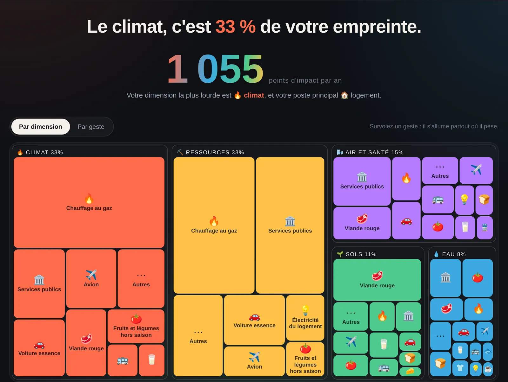
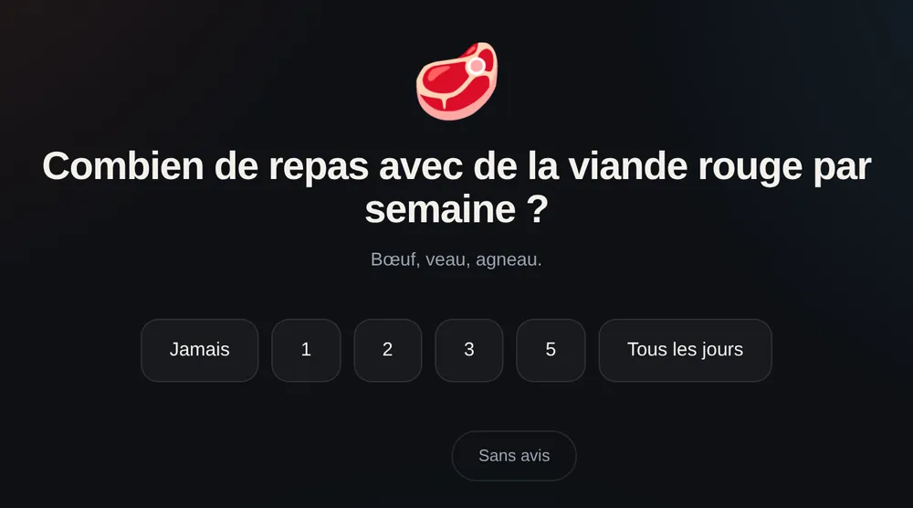
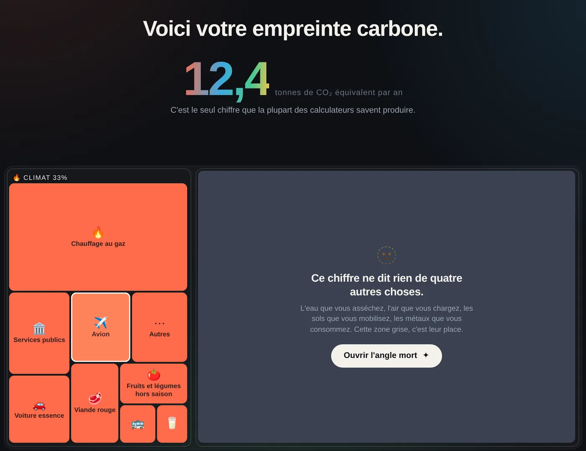
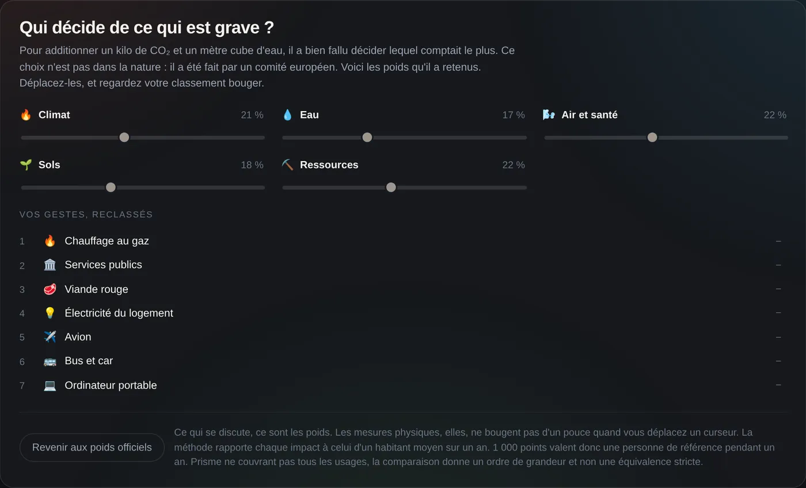

Projets / 01
Prisme, une empreinte personnelle au-delà du carbone
Les calculateurs grand public s'arrêtent au CO₂. Prisme pose 25 questions sur l'assiette, les trajets, le logement, le numérique et les vêtements, puis rend le résultat sur cinq dimensions : climat, eau, air et santé, sols, ressources.

Nos Gestes Climat a rendu le sujet concret pour beaucoup de monde. Mais un calculateur carbone pose les questions qui pilotent le CO₂. Dès qu'on regarde l'eau ou les particules fines, d'autres variables deviennent déterminantes : le mode de chauffage, la part de coton dans les vêtements, la saison des fruits et légumes, la durée de garde du téléphone.
Prisme part de là. Il pose aussi les questions qu'un calculateur carbone ne pose pas, et il rend visibles les transferts d'impact : les gestes qui gagnent d'un côté en perdant de l'autre.
Deux minutes de questions, puis un résultat en deux temps. D'abord l'empreinte carbone seule, en tonnes de CO₂, avec une large zone grise à côté : la place de tout ce que ce chiffre ne dit pas. Un bouton ouvre cet angle mort, et les quatre autres dimensions se déploient à l'échelle.


- 37 gestes répartis en cinq postes (assiette, mobilité, logement, numérique, habillement), plus un socle collectif pour les services publics et les infrastructures, identique pour tout le monde.
- Deux lectures du même résultat : par dimension, en treemap, ou par geste, en barres empilées.
- Pour chaque dimension, une fiche : ce qu'elle mesure, ce qui la fait monter, et vos trois plus gros contributeurs.
- Deux encarts qui vont droit au but : votre principal transfert d'impact et votre premier levier.
Cinq dimensions plutôt que seize indicateurs.
Les 16 indicateurs EF 3.1 sont regroupés en cinq familles lisibles. Elles s'additionnent parce qu'elles sont toutes exprimées en points normalisés et pondérés. Le détail existe, mais on n'impose pas seize axes à quelqu'un qui découvre le sujet.
Montrer que la pondération est un choix.
Pour additionner du CO₂ et de l'eau, il faut décider lequel compte le plus. Dans EF 3.1, ce choix a été fait par un comité européen. Plutôt que de l'expliquer dans une note, Prisme affiche ces poids sous forme de curseurs et laisse l'utilisateur les déplacer. Son classement se recompose en direct. Un rappel reste affiché : ce qui se discute, ce sont les poids, pas les mesures physiques.

Aucun chiffre inventé.
Les impacts viennent directement des bases ACV, AGRIBALYSE en tête pour l'alimentation. Les seules hypothèses ajoutées sont des conventions d'usage (une portion, la masse d'un vêtement), regroupées et déclarées. Un facteur n'est retenu que si ses 16 indicateurs sont renseignés, pour éviter les zéros silencieux. Chaque reconstruction passe une suite de tests automatiques, dont 300 profils tirés au hasard.
Sobre par construction.
Un seul fichier d'environ 80 Ko, sans dépendance, sans traceur ni requête réseau. Il fonctionne hors ligne et aucune réponse ne quitte le navigateur.
Le catalogue reste court et les gestes sont génériques. La biodiversité n'est approchée que par des indicateurs indirects (usage des sols, écotoxicité, acidification), et certaines données manquent de finesse géographique, comme le mix électrique de la voiture électrique.
Surtout, un score EF n'a pas de seuil. On sait qu'un geste pèse plus qu'un autre, on ne sait pas si c'est trop. C'est cette question qui m'a mené au projet 03.